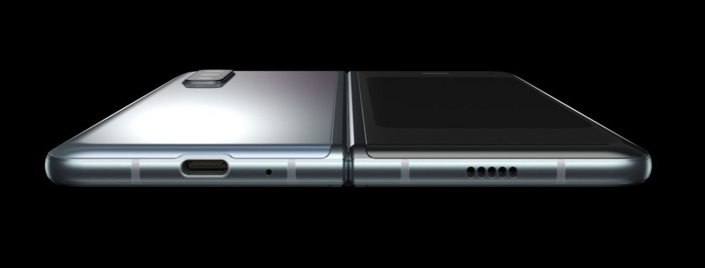

Samsung Galaxy Fold - смартфон со складным экраном, созданный компанией Samsung Electronics. Был представлен 21 февраля 2019 года. Планировалось, что продажи в США начнутся 26 апреля 2019 года, но из-за проблем с экраном они были отложены
Прототип Galaxy Fold и его гнущегося экрана был показан вместе с фирменной оболочкой One UI в ноябре 2018 года на конференции Samsung для разработчиков.
В Galaxy Fold установлены два AMOLED-экрана. Первый, 4,6-дюймовый, расположен в центре передней панели и предназначен для использования одной рукой. После раскрытия устройства становится доступна вторая, 7,3-дюймовая матрица с большим вырезом для камер в правом верхнем углу. Сканер отпечатков пальца встроен в кнопку питания. Смартфон имеет 12 ГБ оперативной и 512 ГБ флеш-памяти; используемый процессор точно неизвестен.
Устройство имеет два аккумулятора (по одному в каждой части) с суммарной ёмкостью 4380 мА·ч, а также шесть камер: три основных (12 Мп, 12, Мп, 16 Мп), две на стороне «главного» экрана (10 Мп, 8 Мп) и одну на передней панели (10 Мп).
Galaxy Fold будет продаваться с предустановленной операционной системой Android Pie и оболочкой One UI. В продаже появится вариант устройства с поддержкой сетей 5G. Среди известных особенностей смартфона — работа с тремя приложениями одновременно и возможность моментально вывести на основной экран приложение, открытое в данный момент на передней панели.
Характеристики
Процессор
Частота процессора
2,8 ГГц, 2,4 ГГц, 1,7 ГГц
Тип процессора
Восьмиядерный
Экран
Размеры (Основной экран)
185.1 мм (7.3")
Разрешение экрана
2152 x 1536 (QXGA+)
Тип экрана
Dynamic AMOLED
Глубина цвета экрана
16 млн.
Камера
Основная камера - Разрешение (значения)
12.0 MП + 16.0 MП + 12.0 MП
Основная камера - Диафрагма (несколько значений))
F1.5/F2.4 (Двойная апертура) , F2.2 , F2.4
Основная камера - Оптическая система стабилизация
Да
Основная камера на задней панели - Зум
2x Оптический зум, Цифровой зум до 10x
Фронтальная камера - Разрешение
10.0 MП + 8.0 MП
Фронтальная камера - Диафрагма
F2.2 , F1.9
Фронтальная камера - Автофокус
Нет
Камера фронтальной панели - Разрешение
10.0 МП
Камера фронтальной панели - Диафрагма
F2.2
Камера фронтальной панели - Автофокус
Нет
Разрешение записи видео
UHD 4K (3840 x 2160) для 60 кадров в секунду
Замедленное движение
960 кадр./с с HD разрешением, 240 кадр./с с FHD разрешением
Память
Объем ОЗУ (ГБ)
12
Встроенная память (ГБ)
512 ГБ
Доступная память (не зарезервировано системой) (ГБ)
461.9 ГБ
Сеть
Количество SIM карт
Dual-SIM
Размер SIM-карты
Nano-SIM (4FF), Встроенная SIM-карта
Тип SIM слота
SIM 1 + Электронная SIM карта
Стандарт связи
2G GSM, 3G WCDMA, 3G TD-SCDMA, 4G LTE FDD, 4G LTE TDD
2G GSM
GSM850, GSM900, DCS1800, PCS1900
3G UMTS
B1 (2100), B2 (1900), B4(AWS), B5(850), B8 (900)
3G TD-SCDMA
B34(2010), B39(1880)
4G FDD LTE
B1(2100), B2(1900), B3(1800), B4(AWS), B5(850), B7(2600), B8(900), B12(700), B13(700), B14(700), B18(800), B19(800), B20(800), B25(1900), B26(850), B28(700), B29(700), B30(2300), B66(AWS-3), B71(600)
4G TDD LTE
B38(2600), B39(1900), B40(2300), B41(2500)
Подключения
ANT+
Да
USB интерфейс
USB Type-C
USB
USB 3.1 Gen 1
Система навигации
GPS, ГЛОНАСС, Beidou, Galileo
MHL
Нет
Wi-Fi
802.11 a/b/g/n/ac/ax 2.4G+5 ГГц, HE80, MIMO, 1024-QAM
Wi-Fi Direct
Да
Версия Bluetooth
Bluetooth v5.0
Функция NFC
Да
Синхронизация с ПК
Smart переключение (ПК версия)
Операционная система
Android
Общая информация
Цвет
Черный
Форм-фактор
Раскладушка
Датчики
Акселерометр, Барометр, Сканер отпечатка пальца, Гироскопический датчик, Геомагнитный датчик, Датчик Холла, RGB датчик освещенности, Датчик присутствия
Физические характеристики
Размеры (ВxШxГ, мм)
160.9 x 117.9 x 6.9
Размеры в сложенном виде (ВxШxГ, мм)
160.9 x 62.9 x 15.5-17.0
Вес (г.)
263
Аккумулятор
Время работы в интернете (3G) (час.)
До 13
Время работы в интернете (LTE) (час.)
До 13
Время работы в интернете(Wi-Fi) (час.)
До 13
Время воспроизведения видео (час., беспроводное)
До 20
Емкость аккумулятора (мАч, типичное значение)
4380
Съемный аккумулятор
Нет
Время воспроизведения аудио (час., беспроводное)
До 74
Время разговора (3G WCDMA) (час.)
До 29
Аудио и Видео
Поддержка стeреозвука
Да
Форматы воспроизведения видео
MP4, M4V, 3GP, 3G2, WMV, ASF, AVI, FLV, MKV, WEBM
Разрешение воспроизведения видео
UHD 8K (7680 x 4320) для 30 кадров в секунду
Форматы аудио
MP3, M4A, 3GA, AAC, OGG, OGA, WAV, WMA, AMR, AWB, FLAC, MID, MIDI, XMF, MXMF, IMY, RTTTL, RTX, OTA, DFF, DSF, APE
Сервисы и приложения
Поддержка Gear
Galaxy Buds, Galaxy Fit, Galaxy Watch, Galaxy Watch Active, Gear Circle (Manager Support), Gear Fit, Gear Fit2, Gear Fit2 Pro, Gear Sport, Gear1, Gear2, Gear2 Neo, Gear S, Gear S2, Gear S3, Gear IconX, Gear 360, Gear 360 (2017)
Поддержка Samsung DeX
Да
S Voice
Нет
Мобильное ТВ
Нет